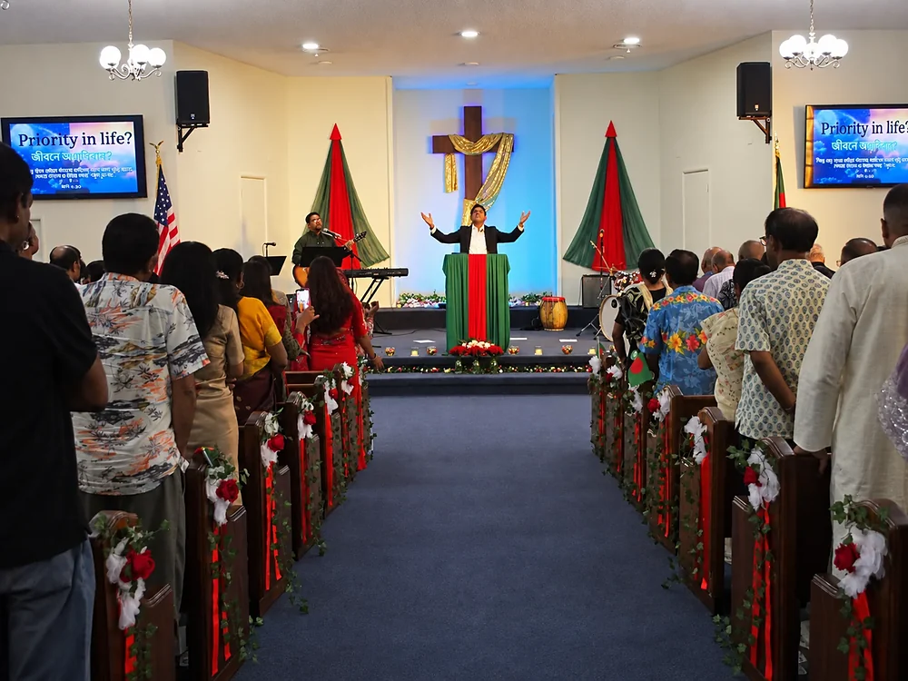

GPBC Ministry Area
Praise & Worship Ministry
Glorifying God through praise and song.

The ministry’s purpose
Our heart for worship
The Praise & Worship Ministry exists to lead God’s people in authentic, heartfelt worship that glorifies the Father and draws us into His presence. Through music, song, and prayer, we create space for believers to encounter God and offer Him praise.
Whether you bring musical gifts or simply a heart ready to worship, we invite you to join us in lifting high the name of Jesus and creating a space where God’s presence is welcomed.
“Come, let us bow down in worship, let us kneel before the LORD our Maker.”
Psalm 95:6–7 (NIV)
Available resource
GPBC Songbook
Explore this existing GPBC resource and return to the Ministry section when you are ready for another next step.
Take a next step
Join the Worship Team
Connect with GPBC for current information, questions, and ways to serve.
Get connected